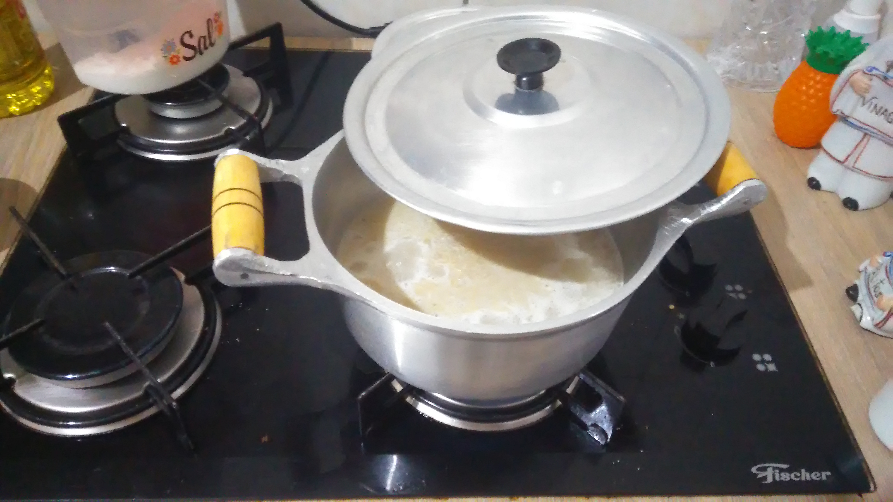
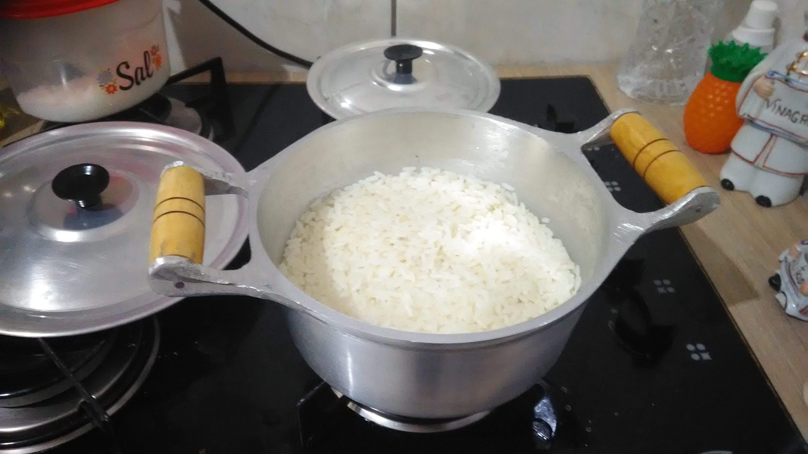

Fazendo o arroz:
- Primeiro vamos pegar o arroz e colocar dentro da panela e colocar também o óleo,
(ou banha), e o sal, ainda sem ligar nada, se quiser esquentar a água para acelerar o
processo é agora, pode ser em uma jarra elétrica ou micro-ondas. Uma quantia boa é, para duas xícaras de arroz,
é duas colheres de sopa de óleo e uma colher de chá de sal.
- Agora está na hora de ligar o fogo se for no fogão a gás, deixe o fogo meio baixo, e pegue a colher grande
que tinha citado na lista de ferramentas, e fique mexendo o arroz AINDA SEM ÁGUA.
o intuito disso é não deixar que o arroz queime e grude na panela.

- Depois de algum tempo, você vai notar que ele deu uma torradinha por causa da cor amarelada, e é ai que você coloca a água, até um pouco acima do
arroz, todo ele tem que ficar cobrido pela água, ela vai dar um barulho e vai evaporar um pouco, de uma mexidinha no arroz para desgrudar algum
grão que tenha grudado na panela, tampe a panela e espere até ter evaporado quase toda a água, vá checando enquanto ele estiver cosinhando.

- Quando a água ja tiver evaporado e o arroz estiver quase todo descoberto, será pressiso repor a água, geralmente o arroz precisa de duas colocadas
de água, para ele cosinhar e absorver bem, nesse momento da segunda aguada você pode colocar alguns temperos, como salsinha, louro, alho, pimentinha, etc.
- E quando ver que a água estiver bem rasa, desligue e dixe a panela tampada até a hora que for servir, e aí esta o arroz feito de modo bem simples mas bom.

Link para voltar para a página inicial.